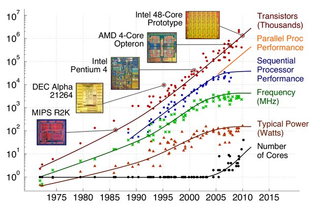
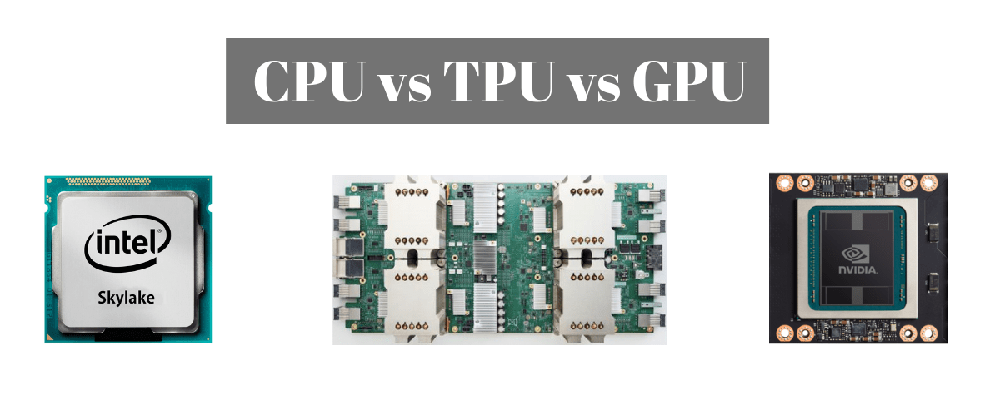
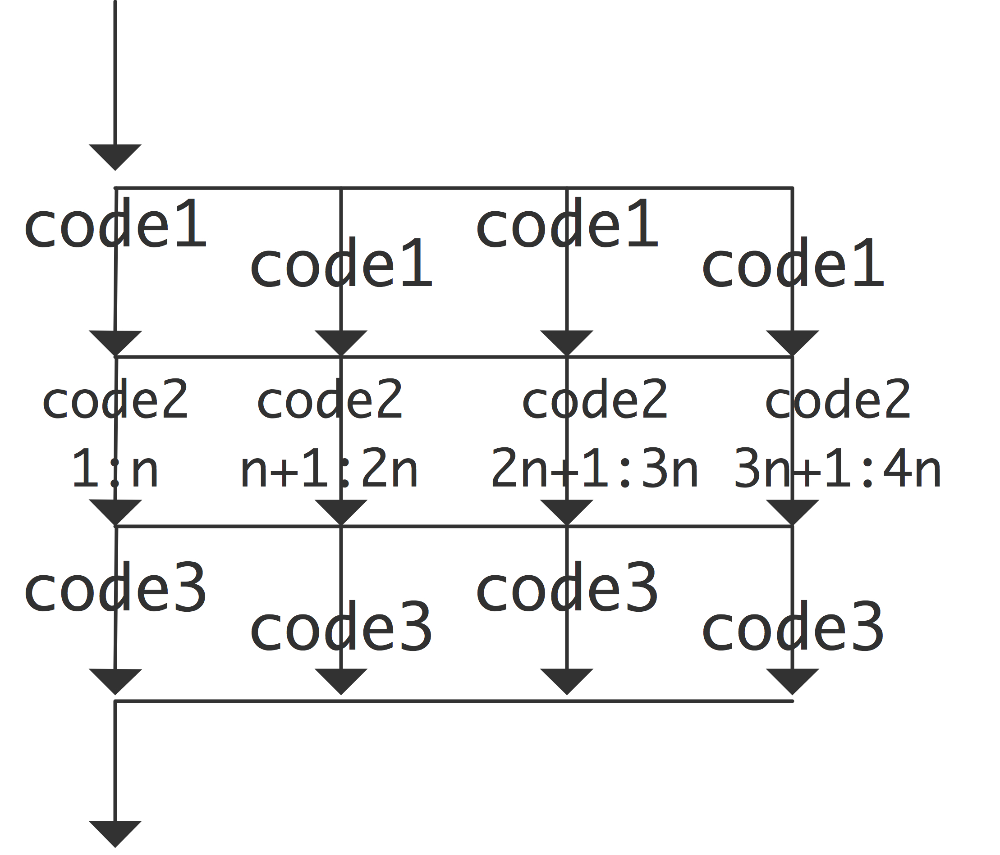

Writing parallel programs is hard. Getting them right, efficient, and maintainable is even harder. Taskflow exists to close that gap - to let C++ developers express sophisticated parallel workloads using a clean task-parallel graph description language.
For decades, software performance improved almost for free. Every processor generation brought faster clock speeds, more transistors, and deeper instruction-level parallelism. A program written in 1995 ran measurably faster on 2005 hardware without changing a single line of code.
That era ended. Clock frequencies plateaued around 2004 as chip designers hit the power wall — the point at which adding more transistors simply generated more heat than the chip could dissipate. The industry's answer was to put multiple independent cores on a single die, giving birth to the multicore era.

The sweeping visualization above (courtesy of Prof. Mark Horowitz and his group) captures this transition clearly: performance scaling has shifted from single-core frequency improvements to parallelism across many cores. Today, every laptop, phone, server, and embedded device ships with multiple cores. The implication for software developers is unavoidable — if your program does not run in parallel, it is leaving performance on the table.
Multicore CPUs were only the beginning. Driven by the explosive growth of artificial intelligence, scientific simulation, and data analytics, modern systems now combine CPUs, GPUs, TPUs, FPGAs, and domain-specific ASICs — each offering different throughputs, latencies, memory hierarchies, and programming models.

Exploiting this hardware diversity is one of the most difficult problems in systems programming. A developer who wants to run a neural network inference must orchestrate data movement from host memory to device memory, launch GPU kernels with the right grid geometry, synchronise CPU and GPU execution at the right points, and do all of this without introducing unnecessary stalls or data races — all while keeping the CPU cores busy in the meantime. Miss any of these concerns and either correctness or performance suffers.
Parallel programming is hard. Parallel programming across heterogeneous devices is a different order of difficulty.
The first tool most developers reach for is loop-level parallelism: partition the iterations of a loop into blocks and run the blocks concurrently.

Loop parallelism is easy to reason about and well-supported by OpenMP, Intel TBB, and the C++ parallel algorithms library. For regular, independent workloads, such as matrix multiplication, image filters, and element-wise array operations, it delivers excellent results. But real applications are rarely that simple. Consider a program with four computational stages where stage A must complete before stages B and C can begin, and stage D cannot start until both B and C have finished, a diamond-shaped dependency as shown below:
There is no natural way to express this with a parallel-for loop. The dependencies cut across loop boundaries. A developer forced to implement this with raw threads must manually coordinate joins, futures, or condition variables, producing code that obscures the actual parallel structure:
The join-points expose the structure, but only because this example is tiny. In a real program with dozens of stages, mixed data and control dependencies, and dynamic subgraphs, the synchronisation logic quickly becomes the dominant concern — error-prone, hard to test, and painful to modify. The root problem is that the parallelism is real and the dependencies are real, but the code has no first-class way to represent either. Thread joins and mutexes are mechanisms, not descriptions.
The right abstraction is a task dependency graph. Each node is a unit of work; each edge is a dependency. The runtime takes the graph and schedules tasks on available cores, respecting all dependencies, without the developer needing to think about threads, joins, or synchronisation points.
Task-based parallelism is not a new idea — it has been validated by the research community and embedded in standards such as OpenMP tasks, Intel TBB flow graphs, and C++ executors. What has been missing is a library that makes task graphs as easy to write as sequential code, works across both CPU and heterogeneous devices, and scales to real-world application complexity.
Taskflow gives developers a concise, expressive API for building and executing task dependency graphs in C++. The same diamond example that required manual thread management above becomes self-documenting with Taskflow:
The dependency structure is explicit and readable. There are no join calls, no mutexes, no condition variables. The executor handles scheduling across all available cores automatically. Adding a new stage, changing a dependency, or reusing the graph requires changing only the parts of the code that actually changed.
This is the design philosophy behind Taskflow:
In a nutshell, code written with Taskflow explains itself. Developers focus on algorithms and decomposition strategies, not on low-level synchronisation mechanics. Taskflow scales from simple parallel loops to large heterogeneous pipelines, and does so with a programming model that stays consistent across both.